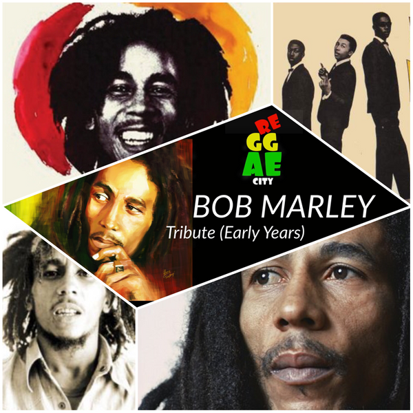
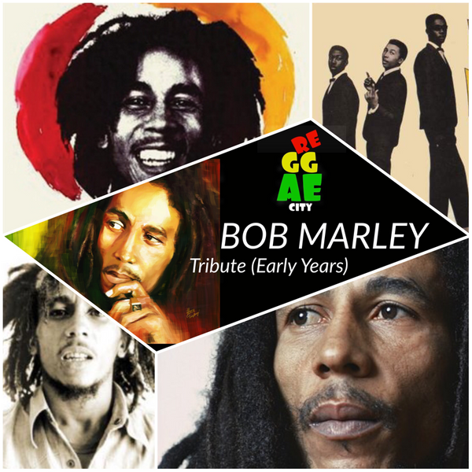

Musical career
1962–72: Early years
In February 1962, Marley recorded four songs, "Judge Not", "One Cup of Coffee", "Do You Still Love Me?" and "Terror", at
Federal Studios for local music producer Leslie Kong. Three of the songs were released on Beverley's with "One Cup
of Coffee" being released under the pseudonym Bobby Martell.
In 1963, Bob Marley, Bunny Wailer, Peter Tosh, Junior Braithwaite, Beverley Kelso, and Cherry Smith were called the
Teenagers. They later changed the name to the Wailing Rudeboys, then to the Wailing Wailers, at which point they were
discovered by record producer Coxsone Dodd, and finally to the Wailers. Their single "Simmer Down" for the Coxsone label
became a Jamaican No. 1 in February 1964 selling an estimated 70,000 copies. The Wailers, now regularly recording
for Studio One, found themselves working with established Jamaican musicians such as Ernest Ranglin (arranger "It Hurts
To Be Alone"), the keyboardist Jackie Mittoo and saxophonist Roland Alphonso. By 1966, Braithwaite, Kelso, and Smith
had left the Wailers, leaving the core trio of Bob Marley, Bunny Wailer, and Peter Tosh.
In 1966, Marley married Rita Anderson, and moved near his mother's residence in Wilmington, Delaware, in the United
States for a short time, during which he worked as a DuPont lab assistant and on the assembly line at a Chrysler plant
in nearby Newark, under the alias Donald Marley.
Though raised as a Catholic, Marley became interested in Rastafari beliefs in the 1960s, when away from his mother's
influence. After returning to Jamaica, Marley formally converted to Rastafari and began to grow dreadlocks.
After a financial disagreement with Dodd, Marley and his band teamed up with Lee "Scratch" Perry and his studio band,
the Upsetters. Although the alliance lasted less than a year, they recorded what many consider the Wailers' finest work.
Marley and Perry split after a dispute regarding the assignment of recording rights, but they would continue to work
together.
1969 brought another change to Jamaican popular music in which the beat slowed down even further. The new beat was a
slow, steady, ticking rhythm that was first heard on The Maytals song "Do the Reggay." Marley approached producer Leslie
Kong, who was regarded as one of the major developers of the reggae sound. For the recordings, Kong combined the Wailers
with his studio musicians called Beverley's All-Stars, which consisted of the bassists Lloyd Parks and Jackie Jackson,
the drummer Paul Douglas, the keyboard players Gladstone Anderson and Winston Wright, and the guitarists Rad Bryan, Lynn
Taitt, and Hux Brown. As David Moskowitz writes, "The tracks recorded in this session illustrated the Wailers'
earliest efforts in the new reggae style. Gone are the ska trumpets and saxophones of the earlier songs, with
instrumental breaks now being played by the electric guitar." The songs recorded would be released as the album The Best
of The Wailers, including tracks "Soul Shakedown Party," "Stop That Train," "Caution," "Go Tell It on the Mountain,"
"Soon Come," "Can't You See," "Soul Captives," "Cheer Up," "Back Out," and "Do It Twice".
Between 1968 and 1972, Bob and Rita Marley, Peter Tosh and Bunny Wailer re-cut some old tracks with JAD Records in
Kingston and London in an attempt to commercialise the Wailers' sound. Bunny later asserted that these songs "should
never be released on an album ... they were just demos for record companies to listen to". In 1968, Bob and Rita visited
songwriter Jimmy Norman at his apartment in the Bronx. Norman had written the extended lyrics for Kai Winding's "Time Is
on My Side" (covered by the Rolling Stones) and had also written for Johnny Nash and Jimi Hendrix. A three-day jam
session with Norman and others, including Norman's co-writer Al Pyfrom, resulted in a 24-minute tape of Marley
performing several of his own and Norman-Pyfrom's compositions. This tape is, according to Reggae archivist Roger
Steffens, rare in that it was influenced by pop rather than reggae, as part of an effort to break Marley into the US
charts. According to an article in The New York Times, Marley experimented on the tape with different sounds,
adopting a doo-wop style on "Stay With Me" and "the slow love song style of 1960s artists" on "Splish for My
Splash". An artist yet to establish himself outside his native Jamaica, Marley lived in Ridgmount Gardens,
Bloomsbury, during 1972.
1972–74: Move to Island Records
In 1972, Bob Marley signed with CBS Records in London and embarked on a UK tour with soul singer Johnny Nash. While
in London the Wailers asked their road manager Brent Clarke to introduce them to Chris Blackwell, who had licensed some
of their Coxsone releases for his Island Records. The Wailers intended to discuss the royalties associated with these
releases; instead, the meeting resulted in the offer of an advance of £4,000 to record an album. Since Jimmy Cliff,
Island's top reggae star, had recently left the label, Blackwell was primed for a replacement. In Marley, Blackwell
recognised the elements needed to snare the rock audience: "I was dealing with rock music, which was really rebel music.
I felt that would really be the way to break Jamaican music. But you needed someone who could be that image. When Bob
walked in he really was that image." The Wailers returned to Jamaica to record at Harry J's in Kingston, which
resulted in the album Catch a Fire.
Primarily recorded on an eight-track, Catch a Fire marked the first time a reggae band had access to a state-of-the-art
studio and were accorded the same care as their rock 'n' roll peers. Blackwell desired to create "more of a
drifting, hypnotic-type feel than a reggae rhythm", and restructured Marley's mixes and arrangements. Marley
travelled to London to supervise Blackwell's overdubbing of the album which included tempering the mix from the
bass-heavy sound of Jamaican music and omitting two tracks.
The Wailers' first album for Island, Catch a Fire, was released worldwide in April 1973, packaged like a rock record
with a unique Zippo lighter lift-top. Initially selling 14,000 units, it received a positive critical reception. It
was followed later that year by the album Burnin' which included the song "I Shot the Sheriff". Eric Clapton was given
the album by his guitarist George Terry in the hope that he would enjoy it. Clapton was impressed and chose to
record a cover version of "I Shot the Sheriff" which became his first US hit since "Layla" two years earlier and reached
number 1 on the Billboard Hot 100 on 14 September 1974.[50] Many Jamaicans were not keen on the new reggae sound on
Catch a Fire, but the Trenchtown style of Burnin found fans across both reggae and rock audiences.
During this period, Blackwell gifted his Kingston residence and company headquarters at 56 Hope Road (then known as
Island House) to Marley. Housing Tuff Gong Studios, the property became not only Marley's office but also his home.
The Wailers were scheduled to open 17 shows in the US for Sly and the Family Stone. After four shows, the band was fired
because they were more popular than the acts they were opening for. The Wailers disbanded in 1974, with each of the
three main members pursuing a solo career.
1974–76: Line-up changes and shooting
Despite the break-up, Marley continued recording as "Bob Marley & The Wailers". His new backing band included brothers
Carlton and Aston "Family Man" Barrett on drums and bass respectively, Junior Marvin and Al Anderson on lead guitar,
Tyrone Downie and Earl "Wya" Lindo on keyboards, and Alvin "Seeco" Patterson on percussion. The "I Threes", consisting
of Judy Mowatt, Marcia Griffiths, and Marley's wife, Rita, provided backing vocals. In 1975, Marley had his
international breakthrough with his first hit outside Jamaica, with a live version of "No Woman, No Cry", from the Live!
album. This was followed by his breakthrough album in the United States, Rastaman Vibration (1976), which reached
the Top 50 of the Billboard Soul Charts.
On 3 December 1976, two days before "Smile Jamaica", a free concert organised by the Jamaican Prime Minister Michael
Manley in an attempt to ease tension between two warring political groups, Marley, his wife, and manager Don Taylor were
wounded in an assault by unknown gunmen inside Marley's home. Taylor and Marley's wife sustained serious injuries but
later made full recoveries. Bob Marley received minor wounds in the chest and arm. The attempt on his life was
thought to have been politically motivated, as many felt the concert was really a support rally for Manley. Nonetheless,
the concert proceeded, and an injured Marley performed as scheduled, two days after the attempt. When asked why, Marley
responded, "The people who are trying to make this world worse aren't taking a day off. How can I?" The members of the
group Zap Pow played as Bob Marley's backup band before a festival crowd of 80,000 while members of The Wailers were
still missing or in hiding.
1976–79: Relocation to England
Marley left Jamaica at the end of 1976, and after a month-long "recovery and writing" sojourn at the site of Chris
Blackwell's Compass Point Studios in Nassau, Bahamas, arrived in England, where he spent two years in self-imposed
exile.
Whilst in England, he recorded the albums Exodus and Kaya. Exodus stayed on the British album charts for 56 consecutive
weeks. It included four UK hit singles: "Exodus", "Waiting in Vain", "Jamming", and "One Love" (which interpolates
Curtis Mayfield's hit, "People Get Ready"). During his time in London, he was arrested and received a conviction for
possession of a small quantity of cannabis. In 1978, Marley returned to Jamaica and performed at another political
concert, the One Love Peace Concert, again in an effort to calm warring parties. Near the end of the performance, by
Marley's request, Michael Manley (leader of then-ruling People's National Party) and his political rival Edward Seaga
(leader of the opposing Jamaica Labour Party) joined each other on stage and shook hands.
Under the name Bob Marley and the Wailers 11 albums were released, four live albums and seven studio albums. The
releases included Babylon by Bus, a double live album with 13 tracks, were released in 1978 and received critical
acclaim. This album, and specifically the final track "Jamming" with the audience in a frenzy captured the intensity of
Marley's live performances.
1979–81: Later years
Survival, a defiant and politically charged album, was released in 1979. Tracks such as "Zimbabwe", "Africa Unite",
"Wake Up and Live", and "Survival" reflected Marley's support for the struggles of Africans. His appearance at the
Amandla Festival in Boston in July 1979 showed his strong opposition to South African apartheid, which he already had
shown in his song "War" in 1976. In early 1980, he was invited to perform at 17 April celebration of Zimbabwe's
Independence Day.
Uprising (1980) was Bob Marley's final studio album, and is one of his most religious productions; it includes
"Redemption Song" and "Forever Loving Jah". Confrontation, released posthumously in 1983, contained unreleased
material recorded during Marley's lifetime, including the hit "Buffalo Soldier" and new mixes of singles previously only
available in Jamaica.
Photos:
 
